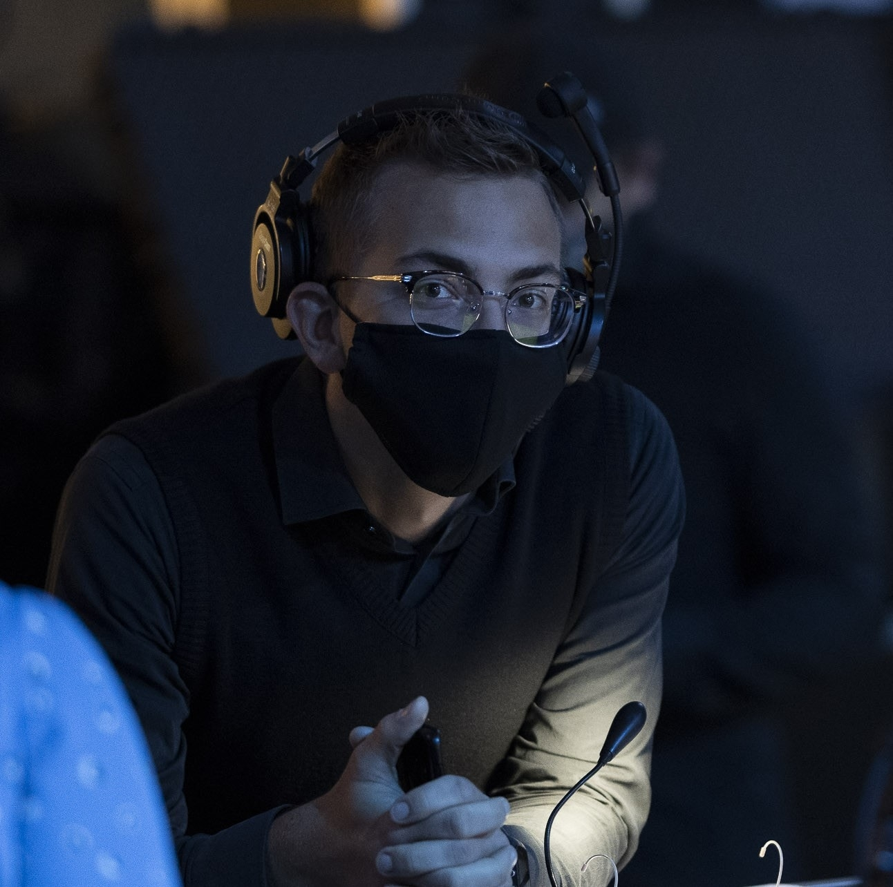

SIIM SUURKASK - My Resume

Summary
I am a trustworthy team player with a technical background.
Education
- Vocational degree in Sound Engineering (Tallinn Georg Otsa nimeline Muusikakool).
- Vocational degree in Mechatronics (Tallinna Tööstushariduskeskus)
Work Experience
RGB BALTIC OÜ - More than 10 years working as a sound technician in a well respected rental company. I have served hundreds of conferences and numerous bands. I am used to having to working day or night to get the job done on time.
Skills
As a starting web developer I am only familiar with basic html, but I am willing and eager to learn more.
I do think that I am good with people. It is hard to get me frustrated and I get on very well with my colleagues and clients. I am polite, but also friendly and helpful. As a sound technician I also have been using english to communicate with foreign artists and their crew or when I have had the chance to work outside Estonia. I know how to program PLCs (programmable logistics controllers), also sound mixers, and some other programs that are needed in modern audio industry. So I am quite confindent I will find some familiar aspects in web development as I have began my journey in that department.
Father of 3 I know how to keep people with different interest happy and willing to work for a mutually positive result.
Awards, certifications or other achievements
I have participated in different courses from quite a young age. I usually finish what I have started.
My latest certification was Vocational degree in Mechatronics which I graduated in summer 2023 with honours.
I have graduated from football refereeing course and keep educating myself in photography and musically, because football, photography and playing instruments and singing are my favourite hobbies.
Click here for my instagram hobby photos